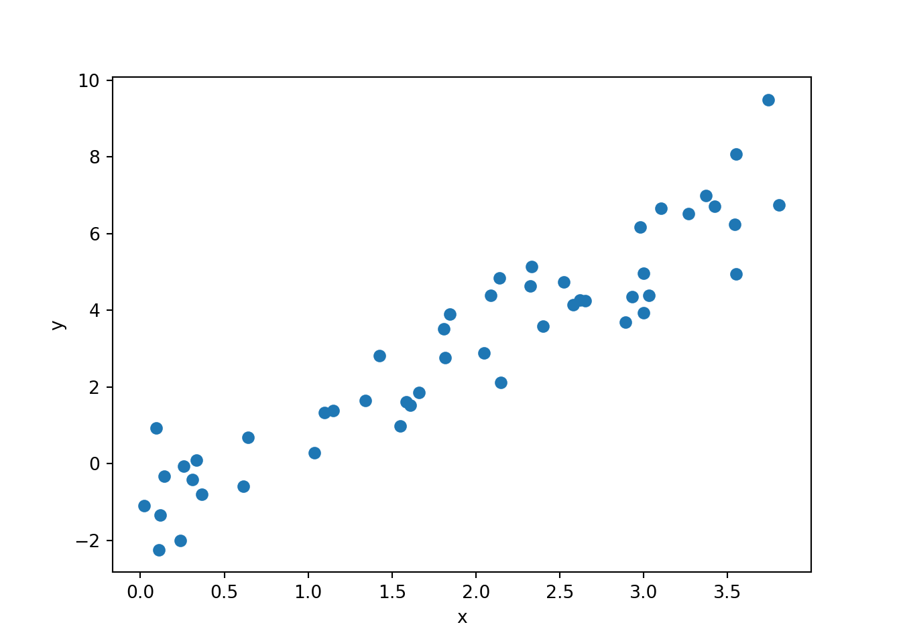
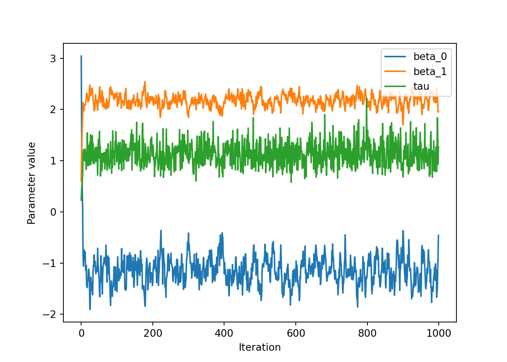
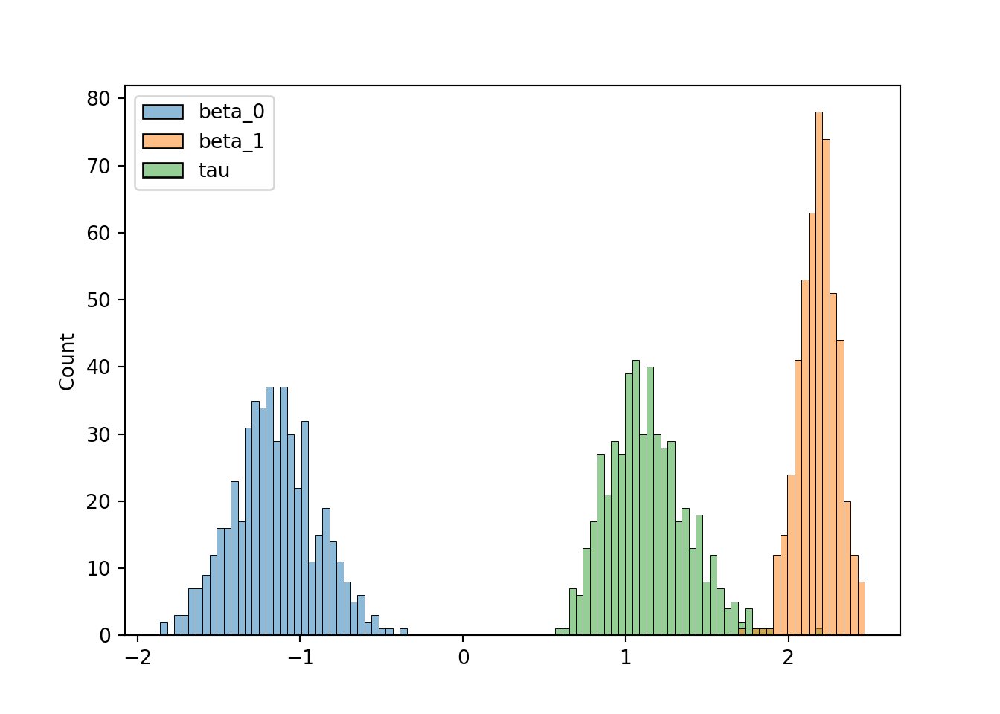

import numpy as np
import matplotlib.pyplot as plt
import seaborn as sns
import pandas as pdIf you do any work in Bayesian statistics, you’ll know you spend a lot of time hanging around waiting for MCMC samplers to run. The question is then what do you spend that time doing? Maybe you’ve read every single article on Medium about avoiding procrastination or you’re worried that those cute dog gifs are using up too much CPU power.
Forsaking both, I’ve written a brief guide about how to implement Gibbs sampling for Bayesian linear regression in Python. This comes out of some more complex work we’re doing with factor analysis, but the basic ideas for deriving a Gibbs sampler are the same. Introductory tutorials to Gibbs sampling seem to be fairly scarce, and while Radford Neal briefly covers it in his lectures here I go into a little more detail in the derivations below. If you find any mistakes or if anything is unclear, please get in touch: kieranc [at] well.ox.ac.uk.
Bayesian linear regression
Here we are interested in Gibbs sampling for normal linear regression with one independent variable. We assume we have paired data \((y_i, x_i) , i = 1, \ldots, N\). We wish to find the posterior distributions of the coefficients \(\beta_0\) (the intercept), \(\beta_1\) (the gradient) and of the precision \(\tau\), which is the reciprocal of the variance. The model can be written as
\[ y_i \sim \mathcal{N}(\beta_0 + \beta_1 x_i, 1 / \tau) \]
or equivalently
\[ y_i = \beta_0 + \beta_1 x_i + \epsilon, \; \; \epsilon \sim \mathcal{N}(0, 1 / \tau) \]
The likelihood for this model may be written as the product over \[ N \] iid observations
\[ L(y_1, \ldots, y_N, x_1, \ldots, x_N | \beta_0, \beta_1, \tau) = \prod_{i = 1}^N \mathcal{N}(\beta_0 + \beta_1 x_i, 1 / \tau) \]
We also wish to place conjugate priors on \(\beta_0\), \(\beta_1\) and \(\tau\) for reasons that will become apparent later. For these we choose
\[ \beta_0 \sim \mathcal{N}(\mu_0, 1 / \tau_0) \]
\[ \beta_1 \sim \mathcal{N}(\mu_1, 1 / \tau_1) \]
\[ \tau \sim \text{Gamma}(\alpha, \beta) \]
Gibbs sampling
Gibbs sampling works as follows: suppose we have two parameters \(\theta_1\) and \(\theta_2\) and some data \(x\). Our goal is to find the posterior distribution of \(p(\theta_1, \theta_2 | x)\). To do this in a Gibbs sampling regime we need to work out the conditional distributions \(p(\theta_1 | \theta_2, x)\) and \(p(\theta_2 | \theta_1, x)\) (which is typically the hard part). The Gibbs updates are then
- Pick some initial \(\theta_2^{(i)}\).
- Sample \(\theta_1^{(i+1)} \sim p(\theta_1 | \theta_2^{(i)}, x)\)
- Sample \(\theta_2^{(i+1)} \sim p(\theta_2 | \theta_1^{(i+1)}, x)\)
Then increment \(i\) and repeat \(K\) times to draw \(K\) samples. This is equivalent to sampling new values for a given variable while holding all others constant. The key thing to remember in Gibbs sampling is to always use the most recent parameter values for all samples (e.g. sample \(\theta_2^{(i+1)} \sim p(\theta_2 | \theta_1^{(i+1)}, x)\) and not \(\theta_2^{(i+1)} \sim p(\theta_2 | \theta_1^{(i)}, x)\) provided \(\theta_1^{(i+1)}\) has already been sampled).
The massive advantage of Gibbs sampling over other MCMC methods (namely Metropolis-Hastings) is that no tuning parameters are required! The downside is the need of a fair bit of maths to derive the updates, which even then aren’t always guaranteed to exist.
Pythonic setup
First let’s set ourselves up with python imports and functions so we can implement the functions as we derive them.
Deriving a Gibbs sampler
The general approach to deriving an update for a variable is
- Write down the posterior conditional density in log-form
- Throw away all terms that don’t depend on the current sampling variable
- Pretend this is the density for your variable of interest and all other variables are fixed. What distribution does the log-density remind you of?
- That’s your conditional sampling density!
We go through this for our three variables step by step below.
Updates for \(\beta_0\)
We’re interested in finding
\[p(\beta_0 | \beta_1, \tau, y, x) \propto p(y, x | \beta_0, \beta_1, \tau) p(\beta_0)\]
Note that \(p(y, x | \beta_0, \beta_1, \tau)\) is just the likelihood from above and \(p(\beta_0)\) is simply \(\mathcal{N}(\mu_0, 1 / \tau_0)\).
If a variable \(x\) follows a normal distribution with mean \(\mu\) and precision \(\tau\) then the log-dependence on \(x\) is \(-\frac{\tau}{2}(x - \mu)^2 \propto -\frac{\tau}{2} x^2 + \tau \mu x\). So if we can force the log-posterior conditional density into a quadratic form then the coefficient of \(x^2\) (where \(x\) is the variable of interest) will be \(\tau \mu\) and the coefficient of \(x^2\) will be \(-\frac{\tau}{2}\).
Hence the log-dependence on \(\beta_0\) is
\[ -\frac{\tau_0}{2}(\beta_0 - \mu_0)^2 - \frac{\tau}{2} \sum_{i=1}^N (y_i - \beta_0 - \beta_1 x_i)^2 \]
Although it’s perhaps not obvious, this expression is quadratic in \(\beta_0\), meaning the conditional sampling density for \(\beta_0\) will also be normal. A bit of algebra (dropping all terms that don’t involve \(\beta_0\) ) takes us to
\[ -\frac{\tau_0}{2} \beta_0^2 +\tau_0 \mu_0 \beta_0 -\frac{\tau}{2} N \beta_0^2 + \tau \sum_i (y_i - \beta_1 x_i) \beta_0\]
In other words the coefficient of \(\beta_0\) is \(\tau_0 \mu_0 + \tau \sum_i (y_i - \beta_1 x_i)\) while the coefficient of \(\beta_0^2\) is \(-\frac{\tau_0}{2} -\frac{\tau}{2} N\). This implies the conditional sampling distribution of \(\beta_0\) is
\[ \beta_0 | \beta_1, \tau, \tau_0, \mu_0, x, y \sim \mathcal{N}\left( \frac{\tau_0 \mu_0 + \tau \sum_i (y_i - \beta_1 x_i)}{\tau_0 + \tau N}, 1 / (\tau_0 + \tau N) \right) \]
Let’s turn that into a python function:
def sample_beta_0(y, x, beta_1, tau, mu_0, tau_0):
N = len(y)
assert len(x) == N
precision = tau_0 + tau * N
mean = tau_0 * mu_0 + tau * np.sum(y - beta_1 * x)
mean /= precision
return np.random.normal(mean, 1 / np.sqrt(precision))Sweet! Now back to the maths.
Update for \(\beta_1\)
Similarly to \(\beta_0\), the dependence of the conditional log-posterior is given by
\[ -\frac{\tau_1}{2}(\beta_1 - \mu_1)^2 - \frac{\tau}{2} \sum_{i=1}^N (y_i - \beta_0 - \beta_1 x_i)^2 \]
which if we expand out and drop all terms that don’t include \(\beta_1\) we get
\[ -\frac{\tau_1}{2} \beta_1^2 +\tau_1 \mu_1 \beta_1 -\frac{\tau}{2} \sum_i x_i^2 \beta_1^2 + \tau \sum_i (y_i - \beta_0) x_i \beta_1\]
so the coefficient of \(\beta_1\) is \(\tau_1 \mu_1 + \tau \sum_i (y_i - \beta_0) x_i\) while the coefficient of \(\beta_1^2\) is \(-\frac{\tau_1}{2} -\frac{\tau}{2} \sum_i x_i^2\). Therefore the conditional sampling density of \(\beta_1\) is
\[ \beta_1 | \beta_0, \tau, \mu_1, \tau_1, x, y \sim \mathcal{N}\left( \frac{\tau_1 \mu_1 + \tau \sum_i (y_i - \beta_0) x_i}{\tau_1 + \tau \sum_i x_i^2}, 1 / (\tau_1 + \tau \sum_i x_i^2) \right) \]
Let’s turn that into a Python function too:
def sample_beta_1(y, x, beta_0, tau, mu_1, tau_1):
N = len(y)
assert len(x) == N
precision = tau_1 + tau * np.sum(x * x)
mean = tau_1 * mu_1 + tau * np.sum( (y - beta_0) * x)
mean /= precision
return np.random.normal(mean, 1 / np.sqrt(precision))Update for \(\tau\)
Deriving the Gibbs update for \(\tau\) is the trickiest part of this exercise as we have to deal with non-Gaussian distributions. First let’s introduce the Gamma distribution, parametrised by \(\alpha\) and \(\beta\). Up to the normalising constant the probability of an observation \(x\) under a Gamma density is given by \(p(x; \alpha, \beta) \propto \beta^\alpha x^{\alpha - 1} e^{-\beta x}\) and so the log-dependency of any terms involving \(x\) is given by
\[ l(x; \alpha, \beta) \propto (\alpha - 1) \log x - \beta x \]
Now back to our derivation. We want
\[ p(\tau | \beta_0, \beta_1, y, x) \propto p(y, x | \beta_0 \beta_1, \tau) p(\tau) \]
which in this case is a density of
\[ \prod_{i = 1}^N \mathcal{N}(y_i | \beta_0 + \beta_1 x_i, 1 / \tau) \times \text{Gamma}(\tau | \alpha, \beta) \]
The key question to ask here is, what’s the density of \(\tau\) assuming all other parameters are held constant? If we look at the log density of this expression we get
\[ \frac{N}{2} \log \tau - \frac{\tau}{2} \sum_i (y_i - \beta_0 - \beta_1 x_i)^2 + (\alpha - 1) \log \tau - \beta \tau \]
which has a coefficient of \(\tau\) of \(-\sum\_i \frac{(y_i - \beta_0 - \beta_1 x_i)^2}{2} - \beta\) and a coefficient of \(\log \tau\) of \(\frac{N}{2} + \alpha - 1\). If you look at the equation of the log-density of the Gamma distribution above, this implies that \(\tau\) as a conditional sampling density of
\[ \tau | \beta_0, \beta_1, \alpha, \beta, x, y \sim \text{Gamma} \left( \alpha + \frac{N}{2}, \beta + \sum_i \frac{(y_i - \beta_0 - \beta_1 x_i)^2}{2} \right) \]
We can now code this into python. np.random.gamma uses the shape and scale parameterisation of a Gamma distribution, where the shape \(k = \alpha\) but the scale \(\theta = 1 / \beta\), so we need to invert our expression for \(\beta\) before sampling:
def sample_tau(y, x, beta_0, beta_1, alpha, beta):
N = len(y)
alpha_new = alpha + N / 2
resid = y - beta_0 - beta_1 * x
beta_new = beta + np.sum(resid * resid) / 2
return np.random.gamma(alpha_new, 1 / beta_new)Some synthetic data
To test our Gibbs sampler we’ll need some synthetic data. Let’s keep things simple - set \(\beta_0 = -1\), \(\beta_1 = 2\) and \(\tau = 1\):
beta_0_true = -1
beta_1_true = 2
tau_true = 1
N = 50
x = np.random.uniform(low = 0, high = 4, size = N)
y = np.random.normal(beta_0_true + beta_1_true * x, 1 / np.sqrt(tau_true))
synth_plot = plt.plot(x, y, "o")
plt.xlabel("x")
plt.ylabel("y")
Writing our Gibbs sampler
Now we’re ready to write the Gibbs sampler. Apart from the data we need to supply initial parameter estimates and hyper parameters. We can place \(\mathcal{N}(0, 1)\) priors on \(\beta_0\) and \(\beta_1\) and a \(\text{Gamma}(2,1)\) prior on \(\tau\). It then makes sense to initialise the sampler at the maximum likeihood estimates of the priors.
## specify initial values
init = {"beta_0": 0,
"beta_1": 0,
"tau": 2}
## specify hyper parameters
hypers = {"mu_0": 0,
"tau_0": 1,
"mu_1": 0,
"tau_1": 1,
"alpha": 2,
"beta": 1}We’re then ready to code up our Gibbs sampler, which simply follows the sequence of sampling statements as explained above.
def gibbs(y, x, iters, init, hypers):
assert len(y) == len(x)
beta_0 = init["beta_0"]
beta_1 = init["beta_1"]
tau = init["tau"]
trace = np.zeros((iters, 3)) ## trace to store values of beta_0, beta_1, tau
for it in range(iters):
beta_0 = sample_beta_0(y, x, beta_1, tau, hypers["mu_0"], hypers["tau_0"])
beta_1 = sample_beta_1(y, x, beta_0, tau, hypers["mu_1"], hypers["tau_1"])
tau = sample_tau(y, x, beta_0, beta_1, hypers["alpha"], hypers["beta"])
trace[it,:] = np.array((beta_0, beta_1, tau))
trace = pd.DataFrame(trace)
trace.columns = ['beta_0', 'beta_1', 'tau']
return traceLet’s test it out. We can use the synthetic data, initialisation and hyper-parameters defined above and run for 1000 iterations.
iters = 1000
trace = gibbs(y, x, iters, init, hypers)We can then plot the traces for the three variables, which is simply the values of the variables against the iteration. Inspecting trace plots for convergence is a bit of a dark art in MCMC inferences. Over the first few (or in cases of Metropolis-Hastings, many) iterations you expect the values to change quite significantly. Then they should reach some equilibrium distribution which will be the posterior distribution of that variable. Let’s have a look for our variables:
traceplot = trace.plot()
traceplot.set_xlabel("Iteration")
traceplot.set_ylabel("Parameter value")
We can see that over the first 20 or so iterations the values change significantly before going to some constant value of around \(\beta_0 = -1\), \(\beta_1 = 2\) and \(\tau = 1\), which are the true values from the synthetic data. Even if it’s obvious that the variables converge early it is convention to define a ‘burn-in’ period where we assume the parameters are still converging, which is typically half of the iterations. Therefore, we can define a new DataFrame that contains the final 500 iterations called trace_burnt, and plot histograms of the values:
trace_burnt = trace[500:999]
print(trace_burnt.head()) beta_0 beta_1 tau
500 -1.428293 2.374115 0.971644
501 -1.409478 2.270175 0.910554
502 -1.531690 2.447890 1.450373
503 -1.732455 2.450335 1.076261
504 -1.674809 2.417664 0.941923# hist_plot = trace_burnt.hist(bins = 30)
# # hist_plot
sns.histplot(trace_burnt, bins=100)
Finally, we can report the posterior mean and standard deviations of the parameters and check they’re consistent with the ‘true’ ones we defined earlier:
print(trace_burnt.mean())beta_0 -1.159797
beta_1 2.180474
tau 1.134067
dtype: float64print(trace_burnt.std())beta_0 0.258064
beta_1 0.117294
tau 0.245233
dtype: float64We see that the posterior means always fall within at most one standard deviation of the true value.
And there we have it, a Gibbs sampler for Bayesian linear regression in Python. There are many topics we haven’t covered here, such as thinning observations in MCMC runs or alternative model specifications such as Automatic Relevance Determination (ARD) priors. There are also many more interesting topics in Gibbs sampling such as blocked and collapsed Gibbs samplers, an introduction to which can be found in the wikipedia article.